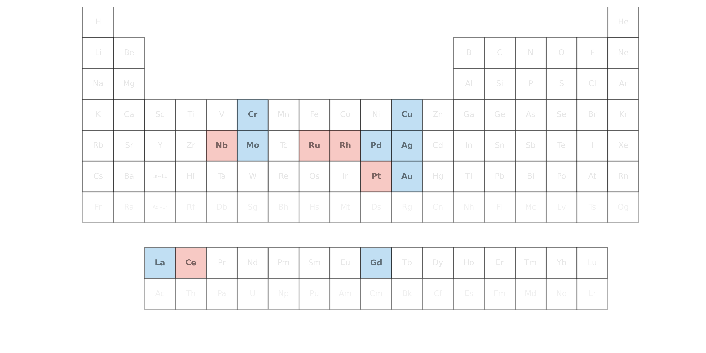
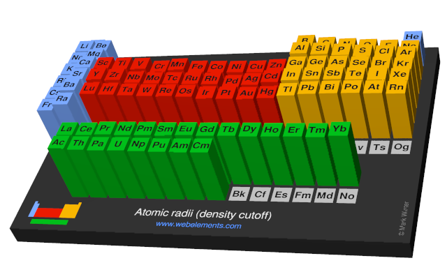
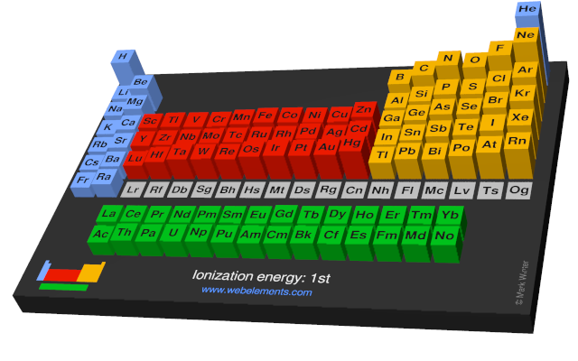
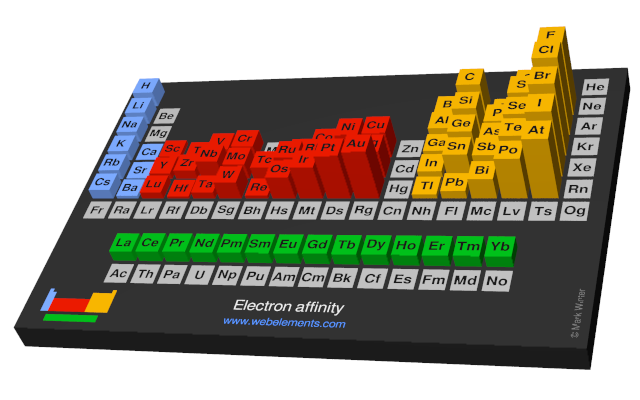

无机化学 复习 第五章
近代原子结构理论
波尔理论
氢原子光谱
氢原子光谱在可见光区有 4 条明显的谱线，通常用 表示。
巴尔末 (Balmer) 公式
里德伯 (Rydberg) 公式
普朗克的量子论
普朗克 (Planck) 认为在微观领域能量是不连续的，物质吸收或放出的能量总是一个最小的能量单位的整倍数。
爱因斯坦 (Einstein) 光电效应
波尔理论
波尔 (Bohr) 氢原子光谱
核外电子在特定的原子轨道上运动，轨道具有固定的能量
其中
波尔 (Bohr) 氢原子光谱（推论）
放出的光子的能量满足：
于是
其中
微观粒子运动的特殊性
微观粒子的波粒二象性
德布罗意 (de Broglie) 物质波
不确定原理
海森堡 (Heisenberg) 不确定原理
或
微观粒子运动的统计学规律
波动性可以看作粒子性的统计结果。
核外电子运动状态的描述
薛定谔方程
量子数的概念
主量子数
- 主量子数 的取值为 正整数，在光谱学中分别用大写字母 代表
- 主量子数 决定了电子的能量
电子所在原子种类 氢原子和类氢离子 核外电子的能量只取决于 ， 越大， 越高 多电子原子 除了取决于 以外，还与其他因素有关 - 描述原子中电子出现概率最大区域离核远近
角量子数
- 角量子数 的取值为 ，对应的光谱学符号为 s, p, d, f, g 等。
- 角动量
3. 在多电子原子中，电子的能量 不仅取决于 ，而且与 有关。 相同， 不同的原子轨道，角量子数 越大的，能量 越大 4. 角量子数 决定原子轨道的形状。
磁量子数
- 的取值为 ，共有 个值。
- 角动量 （矢量）在 轴上的分量
3. 磁量子数 决定原子轨道在核外空间中的分布方向
自旋磁量子数
- 的取值只有两个，即 。
用图形描述核外电子的运动状态
径向分布图
径向概率分布图
即 对于 的图像，其随着 的增大而指数级减小。
径向概率分布图
- 径向概率分布函数 径向概率分布函数定义为： 其中： - 表示在距离原子核 处的球壳内找到电子的概率密度； - 是径向波函数； - 表示半径为 的球壳的表面积。
- 的极值特性 - 当 较小时，概率密度 较大，但球壳体积 较小，因此 不大； - 当 较大时，球壳体积大，但 较小，因此 也不大； - 存在极值，对应电子出现概率最大的位置。
- 不同轨道的概率峰数量规律
- 主峰位置与电子层
- 对于同一主量子数 的轨道（如 2s 和 2p），主峰位置相近；
- 随着 增大，主峰逐渐远离原子核：
- 2s、2p 的主峰比 1s 远；
- 3s、3p、3d 的主峰比 2s、2p 远；
- 4s、4p、4d、4f 的主峰更远… - 这说明从径向概率分布的角度看，核外电子是分层分布的。
- 节面 - 在概率峰之间， 曲线与横坐标轴相切的位置，电子出现概率为零； - 该处对应一个球面，称为 节面； - 节面出现在概率峰之间，是电子概率分布的“节点”。
角度分布图
波函数的角度分布图
用极坐标绘制的 对于 或 的图像。有正负。
概率密度的角度分布图
用极坐标绘制的 对于 或 的图像。无正负。
核外电子的排布
特例
| 元素符号 | 原子序数 | 电子排布 | |
|---|---|---|---|
| 24 | |||
| 29 | |||
| 特殊 | 41 | ||
| 42 | |||
| 特殊 | 44 | ||
| 特殊 | 45 | ||
| 46 | |||
| 47 | |||
| 57 | |||
| 特殊 | 58 | ||
| 64 | |||
| 特殊 | 78 | ||
| 79 |

元素基本性质的周期性
原子半径
下图显示的原子半径是根据理论计算的电子云密度切割后的结果

- 对称性高的电子排布（如 ）离核更近，更紧致，屏蔽效应也更高
- 该效应导致镧系元素中 和 半径突然增大
- 该效应导致稀有气体（）半径突然减小
- 电子填内层会导致半径减小不明显
- 副族半径收缩没有主族明显
- 镧系收缩
- 导致第二、第三过渡元素的原子半径接近 以下是根据您提供的格式与规范，对“电离能”、“电子亲和能”和“电负性”章节的完整定义：
电离能 (ionisation energy)
电离能
电离能是指一个基态的气态原子失去一个电子，成为一价气态阳离子所需的最低能量，通常用符号 表示，单位为 或 。第一电离能 最为常见，它反映了原子失去电子的难易程度，是衡量元素金属性的重要指标。

电子亲和能 (electron affinity)
电子亲和能
电子亲和能是指一个基态的气态原子获得一个电子，成为一价气态阴离子时所释放的能量，通常用符号 表示。它反映了原子获得电子的能力，数值越大（放热越多），表示原子越容易得到电子。

电负性 (electronegativity)
Pauling 经验电负性
Pauling 经验电负性
基于两种元素形成的键能与它们各自同种原子键能的几何平均值之间的差值进行计算。鲍林标度是最早且应用最广的电负性标度，规定氟的电负性为 4.0（后修正为 3.98），以此作为参照基准。

Mulliken 电负性
Mulliken 电负性
元素的第一电离能 与其第一电子亲和能 之和的算术平均值：
该标度基于原子的绝对能量参数，具有更明确的物理意义。

Allen 光谱电负性
Allen 光谱电负性
元素自由原子基态价层电子的平均单电子能量，经缩放因子转换后的数值。对于主族元素，其计算公式为
其中 、 为光谱测得的轨道电子能量，、 为对应轨道电子数。该标度完全基于原子光谱数据。